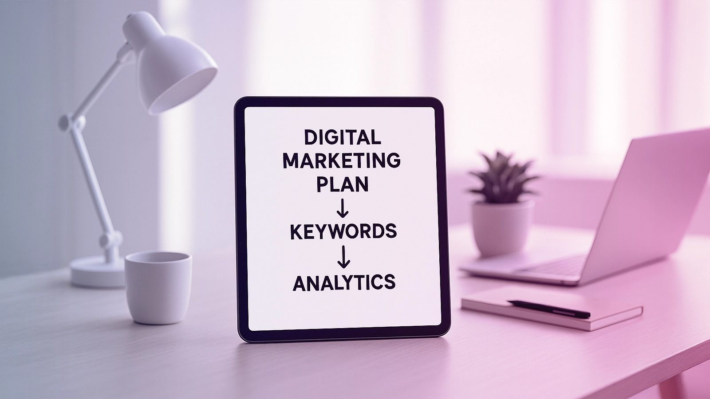

In today's fast-paced digital landscape, having a robust online presence is crucial for startups to thrive. A well-crafted digital marketing strategy serves as the backbone for achieving this goal.
By leveraging a comprehensive digital marketing approach, startups can effectively reach their target audience, drive engagement, and ultimately, boost their business growth. Milaknight, a renowned digital marketing company, offers tailored solutions to help startups succeed in the competitive world of online marketing.
Key Takeaways
- A strong digital marketing strategy is essential for startups to establish a robust online presence.
- Milaknight offers comprehensive digital marketing solutions tailored to startups' needs.
- Effective digital marketing drives engagement and boosts business growth.
- A well-crafted digital marketing strategy helps startups reach their target audience.
- Milaknight's expertise can help startups succeed in the competitive online marketing landscape.
The Digital Landscape for Modern Startups
The digital landscape in Saudi Arabia is rapidly evolving, presenting both opportunities and challenges for modern startups. As the kingdom continues to invest heavily in digital infrastructure, the environment for startups is becoming increasingly competitive.
The Evolving Business Environment in Saudi Arabia
Saudi Arabia's business environment is undergoing significant changes, driven by the ambitious Vision2030 initiative. This transformation is having a profound impact on the digital landscape.
Vision2030 and Digital Transformation
Vision2030 is a strategic plan aimed at diversifying Saudi Arabia's economy and reducing its dependence on oil exports. A key component of this plan is the promotion of digital transformation across various sectors.
- Increased investment in digital infrastructure
- Development of new technologies and innovation hubs
- Enhanced digital literacy among the population
Changing Consumer Behaviors Post-Pandemic
The COVID-19 pandemic has accelerated changes in consumer behavior, with a significant shift towards online shopping and digital services. Startups must adapt to these changes to remain competitive.
Key trends include:
- Rising demand for e-commerce solutions
- Increased use of digital payment systems
- Growing importance of social media in consumer decision-making
Why Digital Presence Matters More Than Ever
In today's digital age, having a strong online presence is crucial for startups. It enables them to reach a wider audience, build brand awareness, and drive business growth.
Mobile-First Saudi Market
Saudi Arabia is a mobile-first market, with a high percentage of the population accessing the internet through mobile devices. Startups must prioritize mobile-friendly websites and applications.
This mobile-centric approach is essential for providing a seamless user experience and capitalizing on the growing mobile market.
Rising E-commerce Trends
E-commerce is on the rise in Saudi Arabia, driven by increasing internet penetration and changing consumer behaviors. Startups can capitalize on this trend by developing effective e-commerce strategies.
By understanding the digital landscape and adapting to the evolving needs of consumers, startups can position themselves for success in the Saudi market. At Milaknight, we develop comprehensive solutions that include thoughtful marketing plans, creative content marketing, and professional website design and optimization to support startups in achieving online growth.
Understanding Digital Marketing Strategy for Startups
A digital marketing strategy is no longer a luxury, but a necessity for startups aiming to achieve business success. In today's competitive digital landscape, startups must leverage a well-crafted digital marketing strategy to stand out and attract their target audience.
Defining an Effective Digital Marketing Strategy
An effective digital marketing strategy is a comprehensive plan that outlines how a startup will use digital channels to achieve its marketing goals. It involves understanding the target audience, setting clear objectives, and selecting the most appropriate digital marketing channels.
Key Components That Drive Success
Several key components drive the success of a digital marketing strategy for startups. These include:
- Clear goal setting: Establishing measurable objectives that align with the startup's overall business goals.
- Target audience understanding: Gaining insights into the demographics, preferences, and behaviors of the target audience.
- Channel selection: Choosing the most effective digital channels to reach and engage with the target audience.
Read More: Digital Marketing Agency That Elevates Your Brand in Saudi Arabia | Milaknight
How Strategy Differs for Startups vs. Established Businesses
The digital marketing strategy for startups differs significantly from that of established businesses, primarily in terms of resource allocation and the need for agility.
Resource Allocation Considerations
Startups typically have limited resources, making it crucial to allocate budget effectively across different digital marketing channels. This might involve focusing on cost-effective channels like social media and content marketing.
Agility and Adaptation Requirements
Startups need to be agile in their digital marketing approach, ready to adapt strategies based on market feedback and performance data. This agility allows startups to quickly respond to changes in the market and stay competitive.
By understanding these key aspects, startups in Saudi Arabia can develop a digital marketing strategy that drives business success and helps them reach their target audience effectively through professional and effective sponsored ads.
The Critical Challenges Startups Face Without Digital Marketing
In today's competitive digital landscape, startups in Saudi Arabia face numerous challenges without a robust digital marketing strategy. The absence of a well-planned online approach hinders their ability to grow and succeed.
Visibility Issues in a Crowded Market
Startups struggle to stand out in a crowded market, making it difficult for potential customers to find them. Effective digital marketing helps increase online visibility, driving more traffic to a startup's website.
Customer Acquisition Struggles
Acquiring new customers is a significant challenge for startups without digital marketing. Targeted online campaigns enable startups to reach their desired audience, increasing the likelihood of conversion.
Scaling Limitations in the Saudi Ecosystem
The Saudi ecosystem presents unique challenges for startups looking to scale. Regional competition and market entry barriers are significant obstacles.
Regional Competition Factors
Regional competition is a major factor, with many startups competing for the same customer base. Understanding local market dynamics is crucial for developing a successful digital marketing strategy.
Market Entry Barriers
Market entry barriers, such as regulatory hurdles and cultural nuances, can hinder a startup's ability to expand. Digital marketing strategies can help navigate these challenges by targeting specific audience segments.
At Milaknight, we build inspiring and impactful success stories with you. By understanding the challenges startups face without digital marketing, we can develop effective strategies to drive online growth and success.
Core Benefits of Implementing a Strong Digital Marketing Strategy
Developing a comprehensive digital marketing strategy is essential for startups to drive growth and success in the Saudi market. A well-planned strategy enables startups to establish a strong online presence, engage with their target audience, and ultimately drive business success.
Cost-Effective Brand Building
A strong digital marketing strategy allows startups to build their brand in a cost-effective manner. By leveraging digital channels such as social media, content marketing, and search engine optimization (SEO), startups can reach a wider audience without incurring the high costs associated with traditional marketing methods.
Targeted Audience Reach in Saudi Arabia
Digital marketing enables startups to target their audience with precision. By using data-driven insights and analytics, startups can identify and engage with their ideal customer demographics, increasing the likelihood of conversion and driving business growth.
Measurable ROI and Performance Tracking
One of the key benefits of digital marketing is the ability to measure return on investment (ROI) and track performance in real-time. Startups can use analytics tools to monitor their campaign's effectiveness, making data-driven decisions to optimize their strategy and improve results.
Competitive Advantage in the Local Market
In a competitive market like Saudi Arabia, having a strong digital marketing strategy can be a key differentiator. Startups can gain a competitive edge by leveraging cultural nuances and understanding the local market dynamics.
Standing Out Among Saudi Competitors
To stand out among competitors, startups must develop a unique value proposition that resonates with their target audience. By understanding the local culture and market trends, startups can create marketing campaigns that are tailored to the Saudi market, increasing their chances of success.
Leveraging Cultural Nuances
Understanding and leveraging cultural nuances is crucial for startups operating in Saudi Arabia. By incorporating local customs, traditions, and values into their marketing strategy, startups can build a strong connection with their target audience, fostering brand loyalty and driving business growth.
At Milaknight, we're more than just an online marketing company; we're partners in your success. Our team of experts works closely with startups to develop customized digital marketing strategies that drive results and help them achieve their business goals.
Essential Digital Marketing Channels for Startup Growth
In today's digital landscape, startups must leverage the right online channels to succeed. A well-rounded digital marketing strategy is crucial for online growth, enabling startups to reach their target audience effectively.
Search Engine Optimization (SEO) Fundamentals
SEO is a critical component of digital marketing, allowing startups to increase their online visibility. By optimizing their website and content for search engines, startups can improve their ranking and drive organic traffic.
Arabic SEO Considerations
For startups targeting the Saudi Arabian market, Arabic SEO is vital. This involves optimizing content for Arabic keywords, understanding the nuances of the Arabic language, and catering to the local search behavior.
Local Search Optimization
Local SEO is also essential, as it helps startups appear in local search results. This includes optimizing the website for location-based keywords, creating content relevant to the local audience, and managing online directories.
Content Marketing for Authority Building
Content marketing is another key channel for startups. By creating high-quality, relevant, and valuable content, startups can establish their authority in the industry, build trust with their audience, and drive engagement.
Social Media Strategies for Saudi Audiences
Social media is a powerful tool for startups to connect with their audience. Understanding the platform preferences in the Kingdom is crucial.
Platform Preferences in the Kingdom
In Saudi Arabia, platforms like Twitter and Instagram are highly popular. Startups should focus on these platforms to reach their target audience effectively.
Engagement Tactics That Work
To drive engagement, startups can use various tactics such as contests, giveaways, and interactive content. These strategies help build a loyal community and increase brand visibility.
Paid Advertising Approaches for Quick Wins
Paid advertising is a quick and effective way for startups to achieve visibility and drive traffic. By using targeted ads on platforms like Google Ads and social media, startups can reach their desired audience and achieve quick wins.
By leveraging these essential digital marketing channels, startups in Saudi Arabia can drive their online growth and achieve success in the competitive digital landscape.

Building a Comprehensive Digital Marketing Framework
To achieve business success, startups must focus on building a comprehensive digital marketing framework tailored to their unique needs. This framework serves as the foundation for all digital marketing efforts, ensuring that strategies are aligned with overall business objectives.
Setting Clear Goals and KPIs
The first step in building a robust digital marketing framework is setting clear, measurable goals and Key Performance Indicators (KPIs). These goals should be specific, achievable, relevant, and time-bound (SMART), allowing startups to track their progress and adjust their strategies accordingly. For instance, a startup might aim to increase its website traffic by 20% within the next quarter or boost its social media engagement by 50% within six months.
Creating Buyer Personas for the Saudi Market
Understanding the target audience is crucial for effective digital marketing. Startups should create detailed buyer personas that reflect the characteristics, preferences, and behaviors of their ideal customers in the Saudi market. This involves researching demographic data, cultural influences, and consumer trends to develop targeted marketing strategies.
Developing a Content Calendar
A well-planned content calendar is essential for consistent and engaging content marketing. Startups should develop a calendar that outlines the type of content to be published, the channels to be used, and the timing of each publication. This calendar should consider:
- Seasonal Considerations: Tailoring content to align with seasonal events and holidays in Saudi Arabia, such as Ramadan and Eid.
- Religious and Cultural Events: Incorporating themes and messages that respect and reflect the local culture and religious practices.
Seasonal Considerations
Adjusting the content calendar to reflect seasonal variations can significantly enhance engagement. For example, during the summer, content might focus on outdoor activities or summer promotions.
Religious and Cultural Events
Incorporating religious and cultural events into the content calendar not only shows respect for the local culture but also helps in creating content that resonates with the target audience. For instance, creating content related to Eid celebrations can foster a sense of community and shared values.
Implementing Analytics and Measurement Tools
To measure the effectiveness of their digital marketing efforts, startups must implement analytics and measurement tools. These tools provide insights into website traffic, engagement rates, conversion rates, and other key metrics, enabling startups to refine their strategies and improve their ROI.
By following these steps and integrating these elements into a comprehensive digital marketing framework, startups in Saudi Arabia can enhance their online presence, drive growth, and achieve business success. At Milaknight, we offer integrated business management and marketing services designed to support startups in their digital marketing journey.
How Milaknight Delivers Digital Marketing Strategy and Online Growth
At Milaknight, we understand the unique needs of startups and deliver tailored digital marketing solutions to drive online growth. With a comprehensive approach, we help startups overcome the challenges of establishing a strong online presence.
Customized Marketing Plans for Unique Business Needs
Our team crafts customized marketing plans that cater to the specific goals and objectives of each startup. By understanding the target audience and market trends, we develop strategies that resonate with the intended audience.
Professional Website Design and SEO Optimization
A professionally designed website is crucial for making a lasting impression on potential customers. We ensure that our website designs are not only visually appealing but also optimized for search engines to improve visibility.
Effective Sponsored Ad Campaigns
Our sponsored ad campaigns are designed to drive traffic and generate leads. By leveraging the power of social media and search engine advertising, we help startups reach their target audience effectively.
Integrated Business Management and Marketing Services
Milaknight offers integrated business management and marketing services that go beyond traditional digital marketing. Our services include:
- Comprehensive business strategy development
- Marketing campaign execution
- Performance tracking and analysis
Video Production Excellence
High-quality video content is a powerful tool for engaging audiences. Our team excels in video production, creating compelling content that showcases a brand's story and values.
Event Organization Capabilities
We also specialize in event organization, providing startups with opportunities to connect with their audience, build brand awareness, and generate leads through live events.
By combining these services, Milaknight provides startups with a holistic approach to digital marketing, ensuring they have everything needed to achieve amazing success in the world of digital marketing.
Real Success Stories: Startups Achieving Business Success
Effective digital marketing has been the cornerstone for numerous startups in achieving business success. By leveraging the right digital strategies, these startups have not only survived but thrived in the competitive Saudi Arabian market.
E-commerce Startup Transformation in Riyadh
A notable example is an e-commerce startup based in Riyadh, which saw a significant transformation after implementing a tailored digital marketing strategy. By focusing on SEO optimization and targeted social media campaigns, the startup was able to increase its online visibility and drive sales.
Service-Based Business Expansion Across GCC
Another success story involves a service-based business that expanded its operations across the GCC region. By adopting a robust digital marketing framework, including content marketing and paid advertising, the business was able to reach a wider audience and establish a strong regional presence.
Lessons Learned and Best Practices
The success stories of these startups offer valuable insights into effective digital marketing practices. Key takeaways include the importance of adapting strategies to the local market and adopting scalable approaches to growth.
Adaptation Strategies
Startups must be willing to adapt their digital marketing strategies based on market feedback and performance data. This involves continuously monitoring key performance indicators (KPIs) and making adjustments as needed.
Scalable Approaches
Implementing scalable digital marketing approaches is crucial for sustained growth. This includes leveraging data-driven insights to inform marketing decisions and drive business expansion.
By embracing these strategies, startups in Saudi Arabia can achieve significant business success and establish a strong foundation for long-term growth.
Read More: Digital Marketing Agency That Elevates Your Brand in Saudi Arabia | Milaknight
Conclusion: Partnering for Digital Marketing Excellence
As we've explored throughout this article, a strong digital marketing strategy is crucial for the success of startups in today's competitive landscape. By leveraging the right digital channels and creating a comprehensive marketing framework, startups can achieve significant online growth and establish a solid foundation for long-term success.
Partnering with a digital marketing expert like Milaknight can help startups navigate the complexities of digital marketing and develop a tailored strategy that meets their unique needs. With customized marketing plans, professional website design, and effective sponsored ad campaigns, Milaknight empowers startups to reach their target audience and drive business success.
By working together with a trusted digital marketing partner, startups in Saudi Arabia can unlock their full potential and achieve remarkable online growth. We're partners in your success, driving your business forward in the digital age.
FAQ
A digital marketing strategy is a comprehensive plan that outlines how a startup will achieve its online growth and business success goals. It's crucial for startups as it helps them establish a strong online presence, reach their target audience, and drive conversions.
For startups, a digital marketing strategy focuses on building brand awareness, acquiring customers, and driving initial growth. Established businesses, on the other hand, often focus on maintaining their market share, improving customer retention, and exploring new markets.
Key components include setting clear goals and KPIs, creating buyer personas, developing a content calendar, and implementing analytics and measurement tools. Startups should also consider SEO, content marketing, social media, and paid advertising as part of their overall strategy.
Startups can measure success by tracking key performance indicators (KPIs) such as website traffic, social media engagement, conversion rates, and return on investment (ROI). Regular analysis and adjustment of their digital marketing strategy are crucial to achieving optimal results.
Content marketing is essential for startups as it helps build authority, establish brand voice, and attract potential customers. By creating high-quality, relevant content, startups can improve their SEO, engage their audience, and drive conversions.
Milaknight offers a range of services, including customized marketing plans, professional website design and SEO optimization, effective sponsored ad campaigns, and integrated business management and marketing services. By partnering with Milaknight, startups can leverage expert knowledge and resources to drive their online growth and business success.